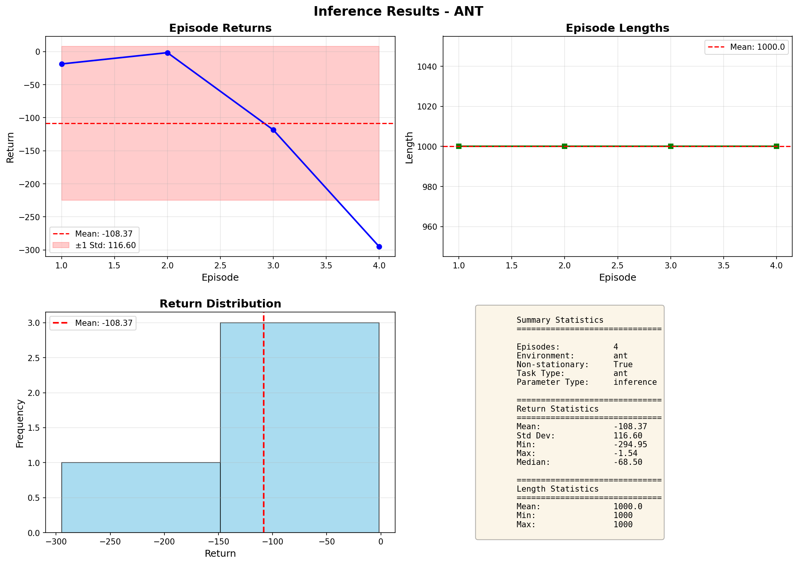

📊 Experiment Information
⚠️ Performance Degradation Detected
The agent shows significant performance decline over episodes in the non-stationary environment, indicating challenges with adapting to changing dynamics.
The agent shows significant performance decline over episodes in the non-stationary environment, indicating challenges with adapting to changing dynamics.
📈 Performance Statistics
-108.37
Mean Return
116.60
Std Deviation
-18.62
Best Return
-294.95
Worst Return
📉 Results Visualization
📋 Episode-by-Episode Data
| Episode | Return | Length | Performance |
|---|---|---|---|
| 1 | -18.62 | 1000 | ✅ Best |
| 2 | -1.54 | 1000 | ⭐ Excellent |
| 3 | -118.38 | 1000 | ⚠️ Declining |
| 4 | -294.95 | 1000 | ❌ Poor |
🔍 Analysis Notes
Key Observations:
- Episode 2 shows the best performance (-1.54 return)
- Significant performance drop from Episode 3 onwards
- All episodes completed the full 1000 steps
- Performance variance suggests difficulty adapting to non-stationary dynamics
- L2 regularization impact should be compared with non-regularized version
Generated by Optim4RL Framework | Learning to Optimize for Reinforcement Learning